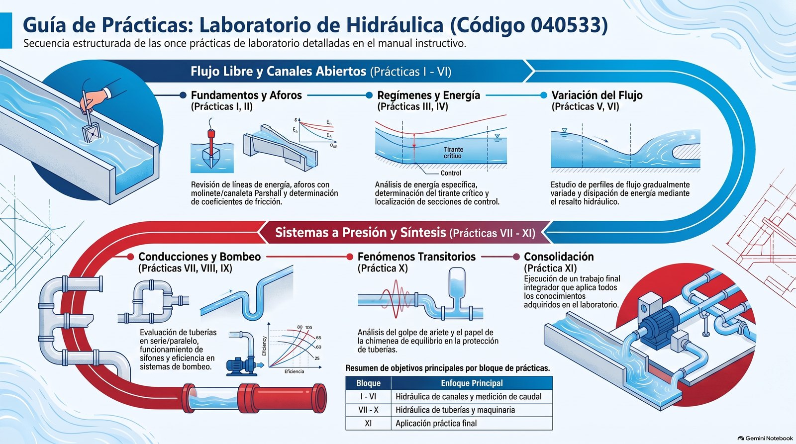

Flujo libre y canales abiertos
I
Líneas de energía y aforosMolinete, canaleta Parshall y método de franjas.
II
Coeficiente de fricción en canalesMediciones de campo y cálculo de rugosidad.
III
Energía específicaTirante crítico y curvas de energía.
IV
Sección de control y flujo críticoCalibración de compuerta plana vertical.
V
Flujo gradualmente variadoPerfiles de remanso por paso directo.
VI
Resalto hidráulicoDisipación de energía y parámetros del resalto.
Sistemas a presión y síntesis
VII
Sistemas de tuberíasConfiguraciones simple, en serie y en paralelo.
VIII
SifonesVacío, límite de cavitación y funcionamiento.
IX
Sistemas de bombeoBombas individuales, en serie y en paralelo.
X
Golpe de arieteTransitorios y chimenea de equilibrio.
XI
Proyecto integradorCalibración de aforadores y aplicación final.
Complemento de la práctica V: ecuación general del flujo gradualmente variado y simuladores de perfiles.
Guía de apoyo docente basada en el manual instructivo del Laboratorio de Hidráulica (040533). No sustituye el manual ni las indicaciones del profesor.